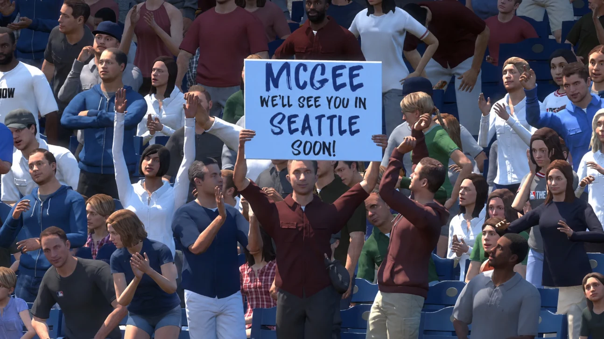
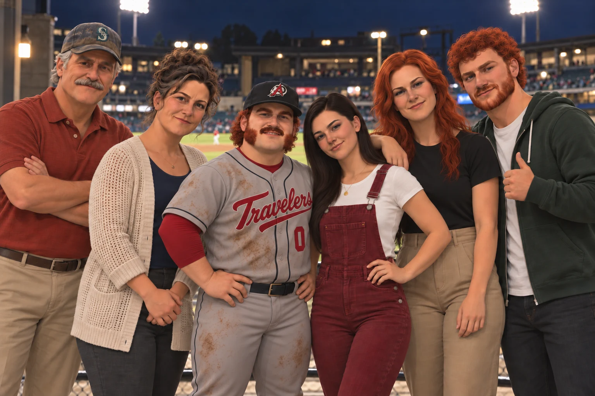
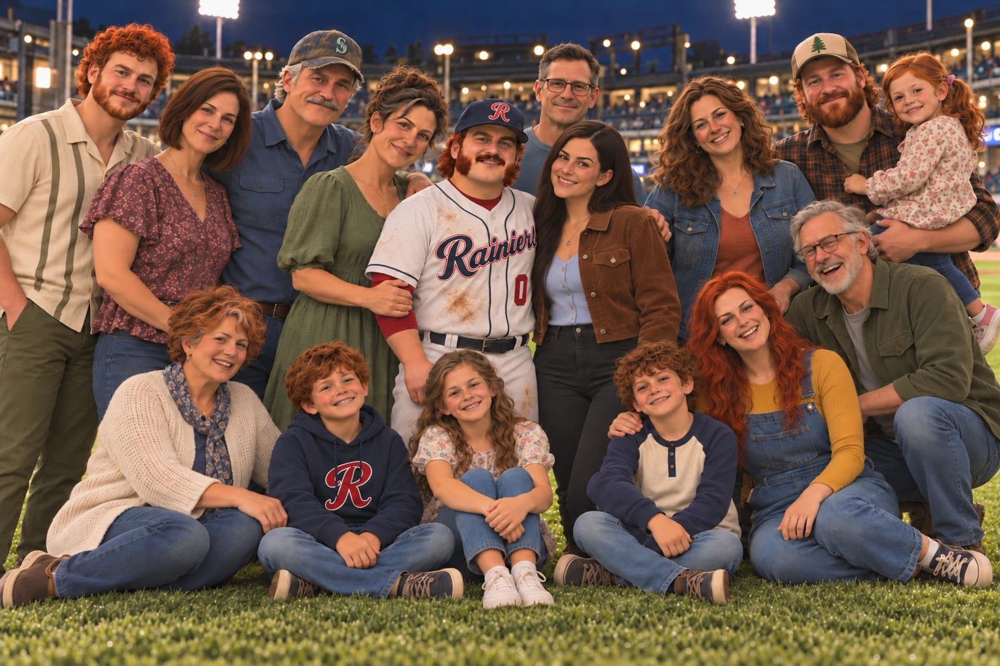

The last time that I met with Tater Tot McGee, we were on his family's 164-year-old potato farm. It was the week before the 2025 MLB Draft, and he had just come off of winning the College World Series with Fresno State. He had been here before, two years earlier in 2023, when he was drafted 27th overall by the New York Yankees.
A few things were different this time. He was to go toward the top of the first round, he didn’t have college waiting for him, and there was a very good chance that he would be drafted by his beloved Seattle Mariners. This time, everything happened like some surreal dream. Not only was he drafted by the Mariners, but he also went No. 1 overall. Being the No. 1 pick comes with tremendously high expectations.
Tater’s rapid ascent through Seattle’s farm system has been exceptionally quick, even for someone with No. 1 pick expectations. It started before he took his first pro at-bat. The Mariners raised more than a few eyebrows when they fast-tracked Tater past the lower levels of their system right to Double-A Arkansas. Tater rewarded their trust by playing well enough to get promoted to Triple-A Tacoma on June 9. Starting your career in Double-A is abnormal. Being called up to Triple-A in just two months is unbelievably fast. Making it to the majors in your first year is Rickey Henderson-on-the-basepaths levels of fast. In fact, fewer than 2% of drafted players make the majors in their first year. The last time the Mariners promoted a college position player to the majors this quickly was 13 years ago, when they did it with Mike Zunino in 2013. It seems as if Tater has been able to handle the pressure thus far, but the Show is a whole other story.
So as he sits on the cusp of achieving another dream, I sit down with Tater once again. We did meet on a farm again, just not his family’s potato farm, but a clubhouse in Arkansas on the Mariners’ farm.

The call to Seattle
PACIFIC: What was your initial thought when you were told that you would be called up?
TATER: At first I thought Coach was joking with me. So everyone in the clubhouse got excited before I did. When it finally hit me, saying I was shocked would be a vast understatement. Then I thought about my parents and how much they have sacrificed to get me to this point.
PACIFIC: Were your parents your first phone call?
TATER: Oh yeah, I couldn’t get my phone out of my pocket fast enough.
PACIFIC: What happened on the call?
TATER: Well, in a surprise to no one, they were watching the M’s. I called Mom’s phone, and she put me on speaker for Dad. They were so happy when I told them. When I thanked them for everything they had done for me, all three of us cried.
PACIFIC: Well, I hope the next call was to the girlfriend.
TATER: (He laughs.) Oh yeah. No chance I was going to get away with calling anybody else first. Plus, my parents had told me that they would tell everybody else for me. The people who know me well knew not to call but to text because I hate the phone. When I woke up, I can’t remember how many notifications I had.
PACIFIC: You went through the minors pretty quick. Do you think you are ready, or do you feel like you need a little more time to get acclimated to being a pro?
TATER: I don’t think it matters if I think I’m ready. The Mariners think I am, so I must be.
PACIFIC: What did the Mariners say your role would be?
TATER: They told me that I will be the starting third baseman, which is great, but I’m not stupid. I know that I am joining a team in a pennant race. I know that means I will be on a much shorter leash than I would have been if I were going to a bad team.
PACIFIC: Talking about that pennant race, do you feel any added pressure to produce right away?
TATER: I know that I am probably supposed to say no, but that would be a lie. I do indeed feel the added pressure. I don’t think that I would be human if I didn’t.
PACIFIC: How do you think you will handle it?
TATER: I really think that I can. This isn’t the first time in my life that I have felt the added pressure of chasing a championship.
PACIFIC: Coming into a new clubhouse midseason can be pretty intimidating. How do you think you will adjust to that?
TATER: It isn’t going to be easy. None of this is going to be easy. I may be starting, but I know that I am the low guy on the totem pole.
PACIFIC: How much easier do you think having Brian O’Keefe and Rhylan Thomas already here will make the transition, especially since you played with both of them earlier this season?
TATER: A lot of people would think, “How much could you have bonded with someone that you have played with for a few months?” Being in the minors and riding those buses give you ample time to bond. Having them there has already eased my anxiety a little bit. I know that not only do I have two guys to talk to, but they are also in my same situation. They really are great people.
PACIFIC: That’s great. You already pointed out the pennant race. Have you been keeping close tabs on the big club this year?
TATER: We are all obviously aware of where they are in the standings. That is about it, though. I have been so focused on playing every day that I haven’t really had the time to check on them daily. I know that my family will be shocked to hear this. I haven’t watched one full game this year.
PACIFIC: How many people are going to make it to your debut, and how has the ticket situation been?
TATER: Since I am debuting on the road in Arlington at the last minute, it will be just the close family and my girlfriend.
PACIFIC: You had a few people come out to your first game in Tacoma, which makes sense since you spent your summers there. Are you expecting the same thing in Seattle?
TATER: Ummm, I feel like the Seattle turnout will be significantly bigger. The fact that I will be on the road first will give everyone more time to get everything together. My mom has been handling that kind of stuff since my travel ball days. She is great with all of it. I guarantee that she has already contacted the organization asking about tickets. She is a machine.
PACIFIC: Before I go, I have to ask you about the now-infamous hat. Your dad’s old beat-up Mariners cap.
TATER: (Laughs.) I guess the legend of that hat is out there now. There is no way he will dump it. We have bought him new hats for Father’s Day, his birthday, and Christmas. To be nice, he will wear it for a day or two, but the old one inevitably ends up back on his head. Mom hates it. She has tried hiding it before, and there it is again. At this point, we have stopped even trying. He is going to be buried in it at this point.

Tater is going to be tested right away. The first four pitchers he will face are future Hall of Famer Jacob deGrom and the Dodgers trio of Yamamoto, Snell and Glasnow. The Dodgers trio is a combined 32-7, with ERAs of 3.50, 3.50 and 2.60, respectively. I hope Tater can swim, because he is about to enter a deep end full of sharks.

Web edition of the August 2, 2026 PACIFIC feature. Story and captions reproduced from the original magazine.
All features →